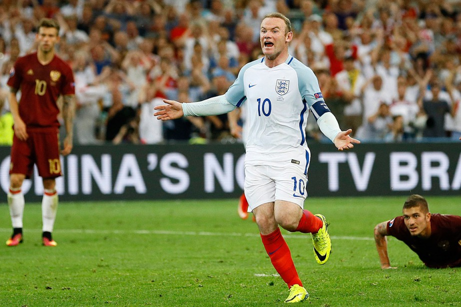

Đôi lúc, những chuyển biến lớn nhất ở một câu lạc bộ có thể diễn ra vào mùa hè, thời điểm thực tế không có bóng đá. Các cầu thủ đến và đi; các nhà quản lý đến và đi. Các đội có thể trở nên tốt hơn (hoặc tệ hơn) dù chẳng ai đá bóng. Tôi có thể rời Old Trafford để đi nghỉ và khi trở lại, mọi thứ đã thay đổi.
Tuy nhiên, chúng không bao giờ diễn ra dữ dội. Bất cứ khi nào ai đó rời United, nhịp điệu bóng đá ở đây vẫn như vậy. Các chàng trai tiếp tục trên sân bóng. Huấn luyện viên trưởng tập trung lựa chọn đội hình. Công việc vẫn thế. Chúng tôi đã quen với những lần đội hình bị xâu xé và các gương mặt mới xuất hiện. Tôi đã học cách không kinh ngạc nếu có ai đó rời đi. Vâng, bất cứ ai, ngoài huấn luyện viên trưởng. Tôi không thể tưởng tượng ông ấy sẽ ở nơi nào khác ngoài United. Tôi sinh năm 1985 và một năm sau đó ông ấy tiếp quản vị trí này. Tôi đã không biết đến Manchester United nếu không có ông ấy.
Mặc dù vậy, một số thay đổi đã diễn ra và lạ hơn là với những người khác. Như sự giải nghệ của Gary Nev hồi tháng 2 năm 2011 và Paul Scholes sau mùa giải 2010-11. Họ đã ở câu lạc bộ lâu đến mức tôi vẫn nhớ, lúc còn là một đứa trẻ, tôi đã cổ vũ cho cả hai khi họ cùng tuyển Anh tham dự World Cup 1998 và tôi từng mơ được thi đấu với họ khi khoác áo Everton. Tôi thậm chí có thể nhớ họ đã chơi cho United đối đầu Everton trong trận chung kết FA Cup 1995 tại Wembley.
Tôi biết hai người đó không thể tiếp tục mãi, đặc biệt là Gary.

.Có những trận đấu trong mùa giải 2010-11, anh ấy thi đấu không đạt được chuẩn mực cao như của Gary. Anh ấy cảm thấy bản thân đã gặp ác mộng trước West Brom, anh ấy đã chơi không tốt trước Stoke. Anh ấy đã mắc một vài sai lầm ngớ ngẩn và tôi có thể nói rằng tinh thần của anh ấy bị ảnh hưởng đôi chút bởi chúng. Gaz là một người kiêu hãnh, anh ấy không muốn khiến bản thân cũng như United thất vọng. Sau những trận đấu đó, có lẽ anh ấy đã biết sắp đến thời điểm kết thúc, anh không còn đủ tốt ở đội Một cho một mùa giải trọn vẹn, vì vậy anh đã nói ra quyết định của mình với huấn luyện viên trưởng và tuyên bố giải nghệ. Theo một cách nào đó, anh đã khiến những người xung quanh trở nên dễ chịu hơn. Đó là phong cách của Gaz.
Nhưng Scholesy thì khác, tôi chưa bao giờ thấy những thứ đó. Anh ấy đẳng cấp ở trên sân bất cứ khi nào anh chơi bóng. Anh quán xuyến khu vực giữa sân nếu chúng tôi bị gây áp lực; có những trận đấu mà chúng tôi đưa ra những đường bóng ngớ ngẩn hoặc chuyền dài về phía trước vì hoảng sợ hoặc tuyệt vọng. Thay vào đó, anh ấy đã giúp chúng tôi giành lại quyền kiểm soát trong những trận cầu khó khăn. Anh cho phép chúng tôi chiếm ưu thế trước đối phương và thực hiện những đường chuyền làm thay đổi trận đấu.
Tôi cho rằng trong một vài trận, anh ấy có vẻ hơi chệch nhịp, nhưng hầu hết thời gian, tầm ảnh hưởng của Scholesy là rất quan trọng. Chúng tôi trông điềm tĩnh hơn khi có anh ở bên cạnh và tôi luôn nghĩ anh là tiền vệ hoàn hảo - anh ấy có thể chuyền bóng, sút bóng, kiểm soát nhịp độ trận đấu; anh ấy có rất nhiều phẩm chất. Sau tuyên bố của anh, huấn luyện viên trưởng nói với toàn đội là Scholesy sẽ làm việc như một huấn luyện viên tại United, đấy là một mất mát ở trên sân đối với chúng tôi, nhưng tôi không thể nghĩ ra một người tốt hơn cho các cầu thủ trẻ học hỏi.
Thật là buồn cười. Tôi có thể cảm nhận rõ sự trống vắng của Gary nơi phòng thay đồ, nhiều hơn Scholesy hay Edwin van der Sar, người cũng đã treo giày. Gaz luôn làm ồn ở khắp nơi - cười, pha trò, ca hát. Paul thì ngược lại. Anh im lặng. Anh ấy chỉ cần mẫn với công việc của mình. Trong tuần, anh ấy sẽ đến tập luyện, và ngay khi tiếng còi mãn cuộc vang lên trong trận đấu tập cuối cùng, anh ấy sẽ lập tức lên xe và về nhà. Anh ấy sẽ tắm rửa và thay đồ trước khi bất kỳ ai trong chúng tôi kịp thở.
Tuy nhiên, có một điểm tích cực về việc Scholesy giải nghệ - thực tế là tôi có thể dễ thở hơn trong việc luyện tập. Anh ấy giống như một con chó săn trong các bài tập. Anh ấy luôn chộp lấy mắt cá chân của tôi bất cứ khi nào tôi có bóng, giống như anh ấy đã làm với tất cả các cầu thủ khác; anh ấy luôn cạnh tranh trong các trận 5 đấu 5 mà chúng tôi đã có tại Carrington và anh ấy cũng mang luôn tinh thần đó vào các trận đấu ở Premier League, đặc biệt là khi cần phải giành phần thắng trong cuộc chiến giữa sân, hoặc khi có cơ hội ở khu vực khác để có thể khai thác và ghi bàn. Anh ấy đã lao vào tắc bóng bởi anh luôn khao khát chiến thắng. Đó là bản tính thứ hai của Gary.
Tôi nghĩ rằng mình không phải là người duy nhất thở phào nhẹ nhõm khi giai đoạn tiền mùa giải đã qua. Bắt đầu buổi tập đầu tiên của chúng tôi, khi các cầu thủ mặc bộ trang phục của họ, tôi nhận thấy rằng Patrice không đeo ống chân trong các trận đấu tập nữa.
Tuy nhiên, có một cầu thủ vẫn đang làm điều đó hằng tuần, đó là Giggsy. 2010-11 là một mùa giải phi thường của anh ấy, với đẳng cấp hàng đầu. Anh không bỏ lỡ cơ hội nào, anh loại bỏ các hậu vệ và lên công về thủ ở hai bên cánh như trở lại tuổi 22 một lần nữa. Nơi phòng thay đồ, một trong những chàng trai nói với Giggsy rằng anh ấy giống như Peter Pan vì dường như không bao giờ già đi. Mấu chốt là, anh ấy xứng đáng để chơi bóng ở đẳng cấp cao nhất vào độ tuổi của mình, bởi anh tập luyện rất chăm chỉ để giữ dáng - anh luôn thúc đẩy bản thân, căng cơ, tập yoga để kéo dài sự nghiệp. Tất cả chúng tôi đều có thể thấy được sự khao khát của Giggsy trong việc tập luyện. Đôi khi điều này là nguồn cảm hứng.
Scholes, Gary Nev, Giggsy: Tôi đã học được rất nhiều điều từ ba người đàn anh này trong suốt thời gian ở đây, mà có thể tôi cũng không hề nhận thức được. Tôi đã theo dõi một vài điều họ thực hiện trong suốt buổi tập - cách họ chuyển động, chế độ thể dục, cách họ chuẩn bị cho bản thân; phong cách của họ, sự bình tĩnh trong các trận đấu - và điều đó đã ảnh hưởng đến màn trình diễn cá nhân của tôi. Tôi đã học được từ họ, tương tự như Kai đã tiếp thu những lối cư xử khác nhau của tôi và Coleen mỗi khi chúng tôi la rầy cậu nhóc, hoặc khi gia đình chúng tôi quây quần ở nhà - gương mặt chúng tôi biểu lộ, cách chúng tôi cười. Điều này diễn ra một cách tự nhiên, đó là một ảnh hưởng tích cực. Vì vậy, dễ hiểu khi tại sao huấn luyện viên trưởng vẫn muốn những cầu thủ như Scholesy ở bất kỳ đâu. Họ quan trọng đối với tập thể, đặc biệt là những chiến binh nhỏ tuổi hơn - những đứa trẻ tại câu lạc bộ. Họ là hình mẫu về những gì cầu thủ phải làm để tồn tại trong bóng đá hiện đại.
Tôi cho rằng ở một khía cạnh nào đó, một đội bóng cũng giống như một gia đình.
Có vài sự thay đổi khi tôi trở lại tập luyện trước mùa giải: tôi tắm rửa, mặc quần áo và khi soi gương, lần đầu tiên sau nhiều năm, tôi có một mái tóc đầy đặn.
Đó là một ca cấy ghép, một phần tóc được lấy từ phía sau đầu của tôi và phẫu thuật dán vào phía trước. Bất chấp những bình phẩm trên một vài tạp chí và những trò đùa từ người bạn đời, tôi nghĩ mọi việc vẫn ổn.
Một số người không bận tâm đến việc tóc của họ bị rụng đi, họ thấy ổn nhưng tôi thừa nhận là tôi thường nhìn chằm chằm vào bản thân mỗi buổi sáng. Rồi thầm nghĩ:Chết tiệt, mày sắp bị hói. Mày chỉ là một chàng trai trẻ. Mày mới 20, và mày không muốn bị rụng hết tóc.
Điều đó thực sự không bao giờ khiến tôi thất vọng, nhưng tôi thừa nhận mình có chút căng thẳng. Bất kỳ ai bị rụng tóc như tôi cũng sẽ hiểu suy nghĩ này. Không vui chút nào. Tôi đã nghĩ về những gì mình sẽ làm với nó. Tôi bắt đầu nhìn lại bản thân và suy nghĩ. Thế tại sao không cấy tóc? Sau rất nhiều nghiên cứu, tôi quyết định đến Harley Street Hair Clinic ở London.
Mặc dù vậy, tôi không mềm yếu. Trước ngày cuối cùng của mùa giải 2010-11, tôi quyết định nói với mọi người trong phòng thay đồ. Tôi biết rằng nếu tôi đi nghỉ với mái tóc lưa thưa và trở lại trông giống như Andy Carroll, họ sẽ “tàn sát” tôi vì điều đó, đặc biệt là nếu có sai sót nào xảy ra, đó là cách của các cầu thủ bóng đá. Không có gì an toàn ở một câu lạc bộ bóng đá. Mọi thứ đều là mục tiêu cho những màn giễu cợt.
Một đôi giày mới? Đã “tàn sát”.
Bức ảnh tồi của bạn trên báo? Đã “tàn sát”.
Quảng cáo mới trên ti vi? Đã “tàn sát”.
Cấy tóc? Đã “tàn sát”.
Khi tôi tháo giày và gom đồ vào túi sau trận đấu với Blackpool, tôi đưa ra thông báo.
“Này, tôi sẽ cấy tóc trong thời gian nghỉ hè…”
Tôi đang rào trước với các cầu thủ, giống như một pha xử lý sớm đối với trung vệ. Tôi cho họ biết rằng mình không quan tâm họ nghĩ gì về điều đó, rằng tôi sẵn sàng cho việc bị chế giễu.
Họ vẫn “tàn sát” tôi.
Ai đó hét lên: “Ôi, Wazza, cậu có định nuôi tóc đuôi ngựa không?”
Mùa giải 2011-12 bắt đầu với hai cú giáng. Một cho chúng tôi, một cho Arsenal. Đầu tiên là diễn ra với Arsenal, chúng tôi đánh bại họ với tỷ số 8-2 trên sân nhà và đây là một trận cầu gây sốc lớn cho tất cả mọi người. Ghi 4 bàn trước một đội bóng xuất sắc như Arsenal là một thành tựu, đặc biệt là khi tôi nghĩ về thành công mà họ đã có trong 10-15 năm qua. Nhưng để ghi 8 bàn? Thật không thể tin được.
Trước trận đấu, có những lời bàn tán đặc trưng về nơi này, nhưng chẳng có gì bất thường xảy ra. Không phải là huấn luyện viên trưởng đã vớ được thứ ma thuật nào đó, chiến thuật là điều sẽ giúp chúng tôi nghiền nát Arsenal. Cuộc chơi về cơ bản vào guồng. Chúng tôi đã khởi đầu mùa giải rất tốt. Arsenal đang có phong độ nghèo nàn. Sự tự tin của chúng tôi lên rất cao và đang trình diễn một thứ bóng đá tấn công tuyệt vời. Thực lực của họ có lẽ là ở mức thấp nhất trong nhiều năm qua, đặc biệt khi họ đã gặp một vài ca chấn thương trong giai đoạn chuẩn bị và một hoặc hai cầu thủ của họ đã bị treo giò.
Khi ngồi trong phòng thay đồ, tôi biết chúng tôi đã chuẩn bị sẵn sàng, giống như sự chuẩn bị cho bất kỳ trận đấu nào, nhưng điều xảy ra tiếp theo là một trận cầu khác. Một trận cầu quái đản, một trận cầu mà chúng tôi như thể sẽ ghi bàn mỗi khi gây áp lực bên phần sân của họ.
Phút 21: Bàn thắng! Danny Welbeck lắc đầu từ khoảng cách 6m.
Chúng tôi đang chuyền và chạy...
Phút 27: Bàn thắng! Từ bên ngoài vòng cấm, Ashley Young - bản hợp đồng mới của chúng tôi - bắn một quả vào góc cao bên phải.
2-0, chúng ta chỉ cần chung sức và đẩy trận đấu đi xa hơn.
Phút 40: Bàn thắng! Tôi nhận bóng ở rìa vòng cấm và điều nó vào góc cao bên trái khung thành.
Trận đấu ngã ngũ, chúng tôi nhìn thấy nửa sau của trận đấu sẽ diễn ra như thế nào, không thành vấn đề.
Phút 45: Họ ghi bàn, Theo Walcott.
Được rồi, không có kịch tính, chúng tôi vẫn đang kiểm soát.
Phút 63: Bàn thắng! Tôi lại ghi bàn, lần này là góc dưới bên trái, một cú sút từ mép vòng cấm.
Các cổ động viên đã lặng thinh, cầu thủ cũng vậy. Arsenal không thi đấu cần mẫn nhiều như họ đã thể hiện trong 20 phút đầu tiên…
Phú 66: Bàn thắng! Nani. Tôi chuyền bóng và anh ấy tung cú sút bên trong vòng cấm, đưa bóng vượt qua thủ môn.
Bàn thắng diễn ra khắp nơi, rất nhiều…
Phút 69: Bàn thắng! Ji-Sung Park.
Tâm trí họ đã bị sao lãng…
Phút 73: Arsenal ghi bàn nhờ công của Van Persie.
Phút 81: Bàn thắng! Ghi nhận cú hat-trick của tôi.
Họ đã bỏ cuộc. Họ không còn chiến đấu…
Phút 90: Bàn thắng! Ashley Young từ rìa vòng cấm đã cuộn một đường bóng vào góc trên bên phải.
Tiếng còi kết thúc trận đấu vang lên. Rất nhiều người của Arsenal trông nhẹ nhõm vì trận đấu đã kết thúc…
Đó là một tỷ số điên rồ và không thường xảy ra ở Premier League. Bất ngờ đến mức tôi thậm chí còn cảm thấy tiếc (một chút) cho họ, bởi kết quả chung cuộc như vậy thật kinh khủng, bệnh hoạn, xấu hổ. Giống như khi chúng tôi bị Middlesbrough đánh bại 4-1 vào năm 2005. Tôi không thể chờ đến khi tiếng còi mãn cuộc vang lên. Tôi muốn rời khỏi đó càng nhanh càng tốt. Tôi không bao giờ muốn trải qua điều đó một lần nào nữa.
Nhưng sau đó, điều tương tự đã xảy đến với chúng tôi; đến lượt chúng tôi bị giáng đòn.
Chúng tôi bị vùi dập 6-1, nhưng thất bại thậm chí còn tệ hơn kết quả với Boro vì nó diễn ra ở Old Trafford, trước sự chứng kiến của những người mến mộ chúng tôi. Đó cũng là một cuộc thảm sát có thể dễ dàng tránh được.
Chúng tôi khởi đầu ổn, nhưng Man City đã có bàn trong hiệp một nhờ công của Mario Balotelli. Sau đó, Jonny Evans bị đuổi khỏi sân ngay sau giờ nghỉ giữa hiệp và đó là lúc mọi chuyện không như ý muốn. Chúng tôi gặp rắc rối vì việc lấy bóng khỏi 11 cầu thủ Man City là quá khó, họ giữ bóng quá tốt.
Chẳng ai lấy làm ngạc nhiên khi họ ghi thêm 2 bàn nữa, nhưng tôi vẫn tin đội bóng có cơ hội đảo ngược thế trận, nhất là khi Fletch gỡ lại 1 bàn vào thời điểm trận đấu còn tới 10 phút mới kết thúc. Nếu chúng tôi có thể trụ lại ở đây, bạn không bao giờ biết được điều gì. Một khoảnh khắc có thể khiến họ sợ hãi và đẩy áp lực lên...
Họ ghi 3 bàn kết liễu.
Não nề!
Chúng tôi luôn biết rằng Man City sẽ là đối thủ nặng ký trong mùa giải này. Họ sa sút trong vài năm qua, nhưng đội hình của họ lúc này cực kỳ chất lượng - bản hợp đồng mới của họ, tiền đạo người Argentina Sergio Aguero ở đẳng cấp khác; Yaya Toure là một con quái vật ở khu trung tuyến. Và với Joe Hart, họ có lẽ đang sở hữu một trong những thủ môn xuất sắc nhất thế giới. Họ mạnh mẽ hơn bao giờ hết.
Thật khó để chấp nhận. Chúng tôi ngồi trong phòng thay đồ sau đó, nhìn chằm chằm vào chân của mình. Không ai muốn tắm. Yên ắng, tiếng ho ngượng nghịu. Ai đó đá chai nước ngang phòng. Những chàng trai trẻ trong đội như Danny Welbeck, Phil Jones - một cầu thủ mạnh mẽ mà chúng tôi đã ký hợp đồng từ Blackburn hồi hè và Chris Smalling, đều trông rất sốc. Những cầu thủ lớn đứng đầu đội cũng vậy. Tôi biết một trận đấu như thế này có thể gây tổn hại đến sự tự tin của một cầu thủ trẻ, đặc biệt nếu họ chưa từng trải qua điều tương tự; các chàng trai trưởng thành hơn không thể để cho điều tồi tệ xảy ra.
Chúng ta phải vượt qua nó.
“Nghe này, việc này đã xảy ra”, tôi nói không với riêng ai mà là tất cả mọi người. “Chúng ta phải tiếp tục. Đó chỉ là 3 điểm, chúng ta hãy vùng lên và giành chiến thắng trong những trận tiếp theo. Giống như trận đấu của Arsenal, tỷ số 6-1 này là một điều quái đản. Chỉ một thôi.”
Tôi biết những lời đó không nhiều, nhưng tốt hơn là không nói gì. Khi tôi rời Old Trafford sau trận đấu với Arsenal, tôi nghe thấy huấn luyện viên trưởng đang trả lời phỏng vấn. Ông nói rằng ông ấy muốn dừng việc ghi bàn trong chiến thắng 8-2 trước Arsenal. Rõ ràng, ông ấy không muốn làm nhục đội bóng của Arsene Wenger thêm nữa.
Tôi cười một mình khi đi đến chỗ huấn luyện viên. Tất cả những gì chúng tôi nghe được trong buổi tập, trong các cuộc họp trước trận đấu, trước khi trận đấu bắt đầu, trong hiệp một và thậm chí toàn bộ thời gian, là: “Các chàng trai, ghi càng nhiều bàn càng tốt. Tiếp tục, cố gắng giải quyết các đội và mang về nhiều bàn thắng hơn.”
Tôi hiểu ý của huấn luyện viên trưởng, nhưng công việc của chúng tôi với tư cách cầu thủ là ghi bàn và giành chiến thắng. Rốt cuộc, bạn không bao giờ biết được, danh hiệu có tùy thuộc vào hiệu số bàn thắng bại trong một năm hay không.
Tôi nóng lòng để tái đấu City.
Tôi muốn hạ gục họ thật đau.
Tôi muốn chứng minh kết quả ở Old Trafford không phải là dấu hiệu manh nha cho thấy cán cân quyền lực đang thay đổi.
Đó là tháng 12 khi tôi nhận được tin chúng tôi sẽ đấu với họ ở Vòng 3 FA Cup trên sân khách.
Điều hằng mong đợi cũng đã đến.
Tại Premier League, chúng tôi trở lại đúng quỹ đạo.
Everton - Manchester United: 0 - 1
Manchester United - Sunderland: 1 - 0
Swansea - Manchester United: 0 - 1
Manchester United - Newcastle: 1 - 1
Villa - Manchester United: 0 - 1
Manchester United - Wolves: 4 - 1
QPR - Manchester United: 0 - 2
Fulham - Manchester United: 0 - 5
Manchester United - Wigan: 5 - 0
Toàn đội đang kéo nhau tiến lên; trên bảng xếp hạng, chúng tôi đang ở vị trí thứ hai, sau Man City, và mọi người ở câu lạc bộ đều đang ở phía sau đội Một. Ngay cả Paul Scholes cũng đang tập với các cầu thủ dự bị, hơn là việc huấn luyện họ từ bên ngoài. Anh ấy làm vậy vì cái gì? Không giống như một cầu thủ đã giải nghệ đang chơi bóng với tôi.
Tôi thực hiện nhiệm vụ của mình bằng cách chuyển sang chơi ở vị trí tiền vệ trung tâm khi đội bị tổn thất lực lượng. Huấn luyện viên trưởng cho là tôi có thể hoạt động ở đó cùng với những mẫu như Tom Cleverley, Anderson, Michael Carrick và Fletch, tất cả các trận đấu bị thiếu người, ông ấy yêu cầu tôi hỗ trợ. Khi tôi lao vào công việc với tư cách là một tiền vệ trung tâm, tôi thích điều đó. Tôi nhận được nhiều bóng hơn. Tôi tham phân phối bóng và sau một trận đấu, tôi thậm chí còn nghĩ đến việc chơi ở đó vĩnh viễn (nhưng chỉ là ở phần sau trong sự nghiệp của tôi).
Tại sao à? Ừ thì ở hàng tiền vệ, tôi không cần phải sắc bén như tiền đạo. Thay vào đó, tôi phải tập trung sức lực vào việc di chuyển từ vòng cấm này sang vòng cấm kia. Nhưng là một tiền đạo, tôi luôn di chuyển rất nhanh, tôi sử dụng những màn bứt tốc ngắn. Một khi cảm thấy mình không có được sự sắc bén cần thiết để thoát khỏi các hậu vệ, tôi có thể lùi xuống hàng tiền vệ trong một vài mùa giải để bản thân vẫn có thể tác động đến trận đấu.
Trong thâm tâm, tôi biết mình vẫn thích thi đấu ở vị trí cao hơn vì tôi có thể gây ra nhiều sát thương hơn trong vòng cấm, nhưng những sự hy sinh không làm tôi bận tâm. Tôi hạnh phúc tại United, bất chấp những khó khăn đôi khi vẫn diễn ra tại một câu lạc bộ bóng đá. Giống như khi chúng tôi hạ Wigan 5-0 trong Ngày lễ tặng quà. Tôi cùng một vài anh bạn và nửa kia của chúng tôi đi ăn tối, rồi đến một khách sạn. Ngày hôm sau, huấn luyện viên trưởng kéo tôi lên và nói rằng ông không hài lòng và không cảm thấy tôi đã được đào tạo bài bản. Ông ta phạt tôi, nhưng điều tồi tệ hơn sẽ xảy đến. Tôi sẽ bị loại khỏi trận đấu tiếp theo với Blackburn. Tại nhiều câu lạc bộ, mọi người sẽ không để mắt đến việc các cầu thủ đi chơi đêm khi còn cách trận đấu tơi 6 ngày; nhưng đó là sự khác biệt ở United và là dấu hiệu của các tiêu chuẩn cao mà huấn luyện viên trưởng yêu cầu. Đây là một vấn đề lớn; một bài học kinh nghiệm khác. Tuần sau đó, tôi ngồi trên khán đài và nhìn chúng tôi thua Blackburn 3-2. Đó là cảm giác tồi tệ nhất. Họ thật thê thảm, họ có vẻ đã chắc suất xuống hạng; nhưng chúng tôi còn thảm hại hơn họ. Theo dõi trận đấu, tôi cảm thấy tuyệt vọng, bất lực như những cổ động viên khác khi chứng kiến thất bại đang diễn ra trước mắt.
Việc trở thành một người hâm mộ đôi khi cũng chẳng ích gì…
City, vòng 3 FA Cup.
Đó là vào buổi sáng diễn ra trận đấu và trong khách sạn của đội. Huấn luyện viên Paul Scholes đang trong bộ đồ vest United của anh ấy, cà vạt, áo sơ mi tao nhã và đôi giày bóng loáng. Thật buồn cười khi thấy anh ấy lúc này trong vai trò một huấn luyện viên thay vì một cầu thủ, nhưng anh cũng rất tuyệt khi xuất hiện để có thể hỗ trợ các đàn em. Là một cầu thủ, đôi khi cần được giúp đỡ để giữ một cái đầu lạnh trên xe buýt cho chuyến làm khách, đặc biệt là với một trận cầu lớn như thế này.
Một giờ sau, khi chúng tôi ngồi trong phòng thay đồ của đội khách, tôi nhận thấy Scholesy cởi bỏ chiếc áo vest lịch thiệp. Anh ấy đang mặc một chiếc áo khởi động, cái được treo lên cùng với các bộ trang phục khác cho đội Một. Đó là lần đầu tiên tôi nhìn thấy chiếc áo này:
Scholes
22
Tôi bắt đầu quan sát mọi người xung quanh để đảm bảo rằng tôi không phải là người duy nhất nhận thấy những gì đang diễn ra. Các chàng trai đang nhìn chằm chằm vào anh ấy. Như thường lệ, Scholesy không nói một lời nào với bất kỳ ai. Anh đang kéo chiếc quần đùi của mình lên, phớt lờ sự ồn ào xung quanh. Có tiếng la hét, hô hoán. Đội hình đang náo loạn. Những cầu thủ trẻ như Chris Smalling không thể tin là họ sẽ được chơi với một trong những tiền vệ trung tâm xuất sắc nhất mà United từng có.
“Hả? Việc đó đã diễn ra khi nào?”
“Huấn luyện viên trưởng đã gi im lặng!”
Tôi không thể bấn loạn hơn về chuyện này.
Một trong những tiền vệ xuất sắc nhất của United trong nhiều năm trở lại đây thi đấu với Man City ở FA Cup và không ai trong chúng tôi được biết trước? Bạn không thể nào tưởng tượng ra điều này…
Chúng tôi hạ City 3-2. Tôi ghi một cú “đúp”. Tôi đáp trả lại những đòn đánh mà họ đã giáng xuống chúng tôi vào đầu mùa giải; Scholesy xuất hiện trong hiệp hai với sự cổ vũ cuồng nhiệt, nhưng anh ấy mắc sai lầm, tạo điều kiện để Man City ghi 1 bàn.
Mặc dù vậy, đó không phải là trận đấu với cái kết nghẹt thở. Trận đấu là của chúng tôi và tôi biết trận đấu là sự trở lại của anh ấy. Sự trở lại này chỉ có thể là một điều tích cực, và giống như một bản hợp đồng mới đối với chúng tôi, giống như một cuộc đoàn tụ gia đình.
Không phải cho tất cả mọi người.
Sáng thứ Ba là ngày tập luyện đầu tiên sau trận thắng Man City. Khi tôi nhìn xuống chân của Patrice vào thời điểm anh ấy bước ra sân tập, tôi nhận thấy một đôi ống đồng đã được nhét trở lại vào tất của anh ấy. Cho nên khi đó, tất cả chúng tôi không hoàn toàn hớn hở cho sự trở lại của Scholesy.